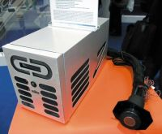
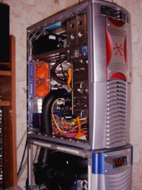
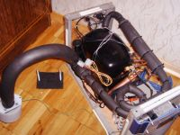
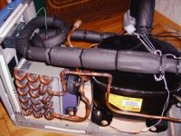
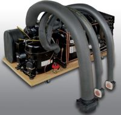
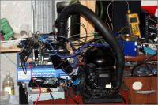

Системы фазового перехода (фреоновые установки)
Чувствуете, как читая текст, становится все
холоднее и холоднее? Еще бы – медленно, но верно спускаемся в диапазон
низких температур.
Сейчас мы рассмотрим не очень распространенный,
но очень эффективный класс систем охлаждения – системы, хладагентом в
которой выступают фреоны. Отсюда и название – фреоновые устанвоки. Но
более правильно было бы называть такие системы системами фазового
перехода. На принципе действия таких систем работают практически все
современные бытовые холодильники.
Но давайте по-порядку. Один из вариантов охладить тело - заставить вскипеть на нем жидкость. Для перехода жидкости в пар, необходимо затратить энергию (энергия фазового перехода) – то есть закипая, жидкость отбирает тепловую энергию от окружающих ее предметов. Но мысленно возвращаясь в стены школьного кабинета физики, мы вспомним, что при текущем давлении мы не сможем нагреть жидкость выше температуры ее кипения. Кто из нас показывали друзьям такой фокус – наливая сок в пластиковый стаканчик и держа под дном стакана пламя? Можете попробовать - никаких катаклизмов не произойдет, пока весь сок не выкипит ;)
Всем известная Википедия трактует слово «Фреоны» как галогеноалканы, фторсодержащие производные насыщенных углеводородов (главным образом метана и этана), используемые как хладагенты. Кроме атомов фтора, в молекулах фреонов содержатся обычно атомы хлора, реже — брома. Известно более 40 различных фреонов; большинство из них выпускается промышленностью. Фреоны - бесцветные газы или жидкости, без запаха.
Если же взять такую жидкость, которая будет закипать, скажем, при -40°С, то сосуд, в котором свободно кипит эта жидкость (такой сосуд называют испарителем), будет очень сложно нагреть. Его температура будет стремиться к -40°С. А поставив такой сосуд на нужный нам объект охлаждения (например, на процессор), мы сможем добиться того, чего и хотели – охладить систему.
Но понятное дело, лазить с определенным интервалом под стол и заливать жидкость в испаритель никто не будет – нужно из пара жидкости опять получить саму жидкость, которая будет снова подаваться в испаритель. Вот Вам пища для самостоятельных размышлений.
Ладно-ладно. В результате размышлений вы должны прийти к схеме следующего вида: мощный компрессор после испарителя качает газ и подает его под большим давлением в конденсор. Там газ конденсируется в жидкость и отдает тепло. Конденсор, выполненный в виде радиатора, рассеивает тепло в атмосферу – этот этап мы уже хорошенько рассмотрели в предыдущих системах. Далее жидкий фреон поступает к испарителю, где выкипая, отбирает тепло – вот и весь замкнутый цикл. Цикл «фазовых переходов» потому так и назван - фреон попеременно меняет свое агрегатное состояние.
Системы фазового перехода, испарители (холодильники) которых устанавливаются непосредственно на охлаждаемые элементы, называются системами «Direct Die». Холодными в такой системе являются только сам испаритель и отсасывающая трубка, остальные же элементы могут иметь комнатную температуру или выше. Холодные элементы нужно тщательно теплоизолировать для предотвращения образования конденсата.
Минусом фреонок является относительная громоздкость испарителя и отсасывающей трубки, поэтому объектом охлаждения выбираются лишь процессор и видеокарта.
Есть и еще одна разновидность систем охлаждения, о которой я пока не упомянул – чиллеры. Этот класс систем состоит в основном из систем жидкостного охлаждения, отличием же является наличие второй части (холодильника теплоносителя), которая работает вместо радиатора – зачастую эта часть является той самой системой фазового перехода. Достоинством такой системой является то, что ей можно охладить все элементы системника, а не только видеокарту и процессор (в отличие от «direct die»-систем). Система фазового перехода чиллера охлаждает лишь теплоноситель системы жидкостного охлаждения, то есть в замкнутом контуре течет очень холодная жидкость. Отсюда и минус систем такого типа – необходимость изолирования ВСЕЙ системы (водоблоки, трубки, насосы и т.п.). Если же изолировать не хочется, то можно использовать маломощную фреоновую установку для чиллера, но тогда об экстремальном разгоне можно будет забыть. Тут уж выбирайте, Вам шашечки или ехать.
Итог по фреонкам
К блестящей стороне медали можно отнести возможность достижения очень низких температур, возможность постоянной работы (в отличии от системы, которая рассмотрена далее). Высокий КПД системы (потери минимальны). Из постоянных систем охлаждения, фреонки – самые мощные. При этом они позволяют выносить тепло из корпуса, что положительно сказывается на температурах внутри него.
К стороне медали, намазанной дегтем, относятся такие особенности системы, как сложность изготовления такой системы [ серийно выпускаемых систем не так много, цены сопоставимы со стоимостью запуска шаттла ;) ]. Небольшой вес и маленькие габариты – все это в полной мере отсутствует в установках данного типа.
Условная стационарность системы. Практически во всех случаях (кроме тех случаев, когда Вы не планируете заниматься экстремальным разгоном) – потребуется теплоизоляция всей системы. Ну и самый, пожалуй, негативный момент – более чем ощутимый шум от работы (50-60 дБ).
Еще одним минусом фреонок является то, что на покупку фреона нужна лицензия. У кого ее нет, выбор не велик: в свободной продаже есть только один - R134a (точка кипения которого -25°С).
Существует еще один хладагент - R290 (пропан), но
сейчас он не используется в охладительных системах (возгораемость). Он
обладает очень хорошими свойствами: точка кипения -41°С, совместим с
любым маслом компрессора и главное, дёшев.
Одевайте варежки, «слоники» и шапки с шубой. - мы добрались до самого холодного момента в этой статье.